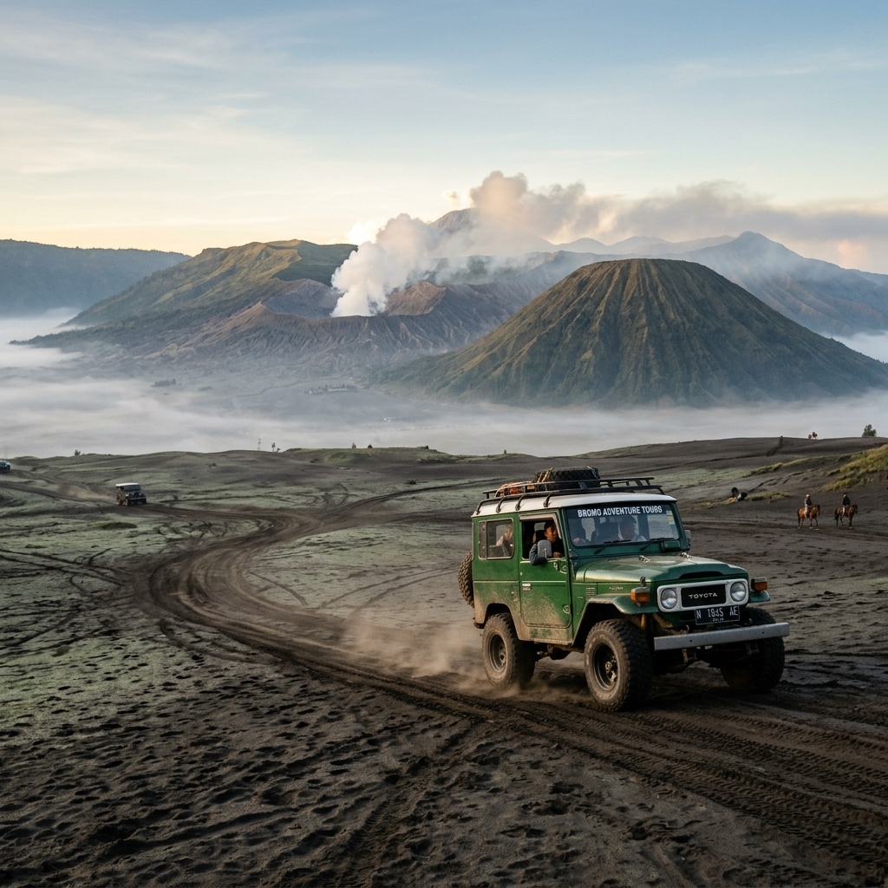

Wisata Bromo Ijen adalah rangkaian perjalanan yang memadukan kunjungan ke Gunung Bromo dan Kawah Ijen dalam satu rute wisata di Jawa Timur, populer karena efisiensi waktu dan variasi pengalaman.
Ringkasan Inti
- Wisata Bromo Ijen umumnya ditempuh dalam rentang dua hingga tiga hari perjalanan.
- Bromo menawarkan pengalaman matahari terbit di atas lautan pasir, sementara Ijen menawarkan blue fire dan danau kawah.
- Rute umum dimulai dari Malang atau Surabaya menuju Bromo, lalu dilanjutkan ke Banyuwangi untuk Ijen.
- Perjalanan malam hari menjadi bagian penting karena kedua lokasi paling ideal dikunjungi dini hari.
- Persiapan fisik dan pakaian hangat diperlukan karena suhu di kedua lokasi cenderung dingin pada dini hari.
Apa Itu Wisata Bromo Ijen?
Wisata Bromo Ijen adalah konsep perjalanan yang menggabungkan dua destinasi utama di Jawa Timur, yaitu Gunung Bromo di kawasan Taman Nasional Bromo Tengger Semeru dan Kawah Ijen di perbatasan Banyuwangi-Bondowoso.
Kedua destinasi ini dianggap saling melengkapi karena menawarkan jenis pengalaman berbeda dari fenomena vulkanik. Bromo dikenal dengan pemandangan matahari terbit dari titik pandang seperti Penanjakan, sementara Ijen dikenal dengan fenomena blue fire serta danau kawah berwarna toska. Kombinasi keduanya menjadikan rute ini sebagai salah satu perjalanan wisata alam paling diminati di Indonesia bagian timur pulau Jawa.
Bagaimana Rute Umum Perjalanan Bromo Ijen?
Rute umum dimulai dari kota seperti Malang, Surabaya, atau Probolinggo menuju kawasan Bromo, lalu dilanjutkan perjalanan darat menuju Banyuwangi untuk mengunjungi Kawah Ijen.
Setelah menyaksikan matahari terbit di Bromo pada dini hari, wisatawan umumnya melanjutkan perjalanan darat ke arah Banyuwangi yang memakan waktu beberapa jam. Perjalanan ini sering dilakukan pada siang atau sore hari agar wisatawan dapat beristirahat sebelum mendaki Kawah Ijen pada dini hari berikutnya. Pola rute ini menjadi standar di kalangan agen perjalanan yang menawarkan paket gabungan Bromo Ijen.

Rute perjalanan Bromo Ijen menjanjikan dua pemandangan ikonik yang saling melengkapi dalam satu rangkaian liburan yang tak terlupakan.
Berapa Lama Waktu Ideal untuk Wisata Bromo Ijen?
Waktu ideal untuk wisata Bromo Ijen umumnya berkisar dua hingga tiga hari, mengingat kedua lokasi memerlukan kunjungan dini hari yang terpisah.
Durasi ini mempertimbangkan waktu perjalanan darat antar lokasi serta kebutuhan istirahat wisatawan sebelum mendaki kembali. Perjalanan yang terlalu singkat berisiko membuat wisatawan kelelahan karena harus bangun dini hari secara berturut-turut tanpa waktu pemulihan yang cukup.
Apa Saja Tips Penting untuk Wisata Bromo Ijen?
Tips penting meliputi pengaturan waktu istirahat, penyesuaian pakaian dengan suhu dingin, serta pemilihan kendaraan yang sesuai untuk medan di kedua lokasi.
Beberapa hal yang perlu diperhatikan:
- Bawa pakaian hangat berlapis karena suhu dini hari di kedua lokasi bisa cukup rendah.
- Sesuaikan jadwal istirahat agar tubuh tidak kelelahan akibat aktivitas dini hari berturut-turut.
- Gunakan kendaraan yang sesuai dengan medan berpasir di Bromo dan medan menanjak di Ijen.
- Rencanakan waktu perjalanan darat antar lokasi agar tidak terburu-buru saat tiba di titik pengamatan.
Kesimpulan
Wisata Bromo Ijen memberikan pengalaman lengkap dua ikon alam Jawa Timur dalam satu rangkaian perjalanan, asalkan waktu, fisik, dan perlengkapan dipersiapkan dengan baik.
FAQ
Secara umum tidak disarankan dalam satu hari penuh karena kedua lokasi memerlukan kunjungan dini hari yang terpisah dan jarak tempuh antar lokasi cukup jauh.
Pola umum yang banyak digunakan adalah mengunjungi Bromo terlebih dahulu, lalu dilanjutkan ke Ijen, karena rute perjalanan darat lebih efisien mengikuti arah tersebut.
Cocok, selama wisatawan mempersiapkan fisik dan mengikuti jalur resmi yang sudah tersedia di kedua lokasi.